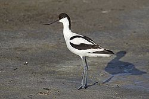
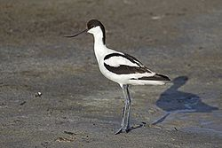

| Pied Avocet | |
|---|---|
|  | |
| Conservation status | |
| Binomial name | |
| Recurvirostra avosetta Linnaeus, 1758 |
| Pied Avocet | |
|---|---|
|  | |
| Conservation status | |
| Binomial name | |
| Recurvirostra avosetta Linnaeus, 1758 |
The Pied Avocet, Recurvirostra avosetta, is a large black and white wader in the avocet and stilt family, Recurvirostridae. They breed in temperate Europe and western and Central Asia. It is a migratory species and most winter in Africa or southern Asia. Some remain to winter in the mildest parts of their range, for example in southern Spain and southern England.
This species gets its English and scientific names from the Venetian name avosetta. It appeared first in Aldrovandi's Ornithologia (1603).[2] While the name may refer to black and white outfits once worn by European advocates or lawyers, the actual etymology is unknown.[2] Other common names include Black-capped Avocet, Eurasian Avocet or just Avocet.[3]
The Pied Avocet is one of the species to which the Agreement on the Conservation of African-Eurasian Migratory Waterbirds (AEWA) applies.

{kind=link}